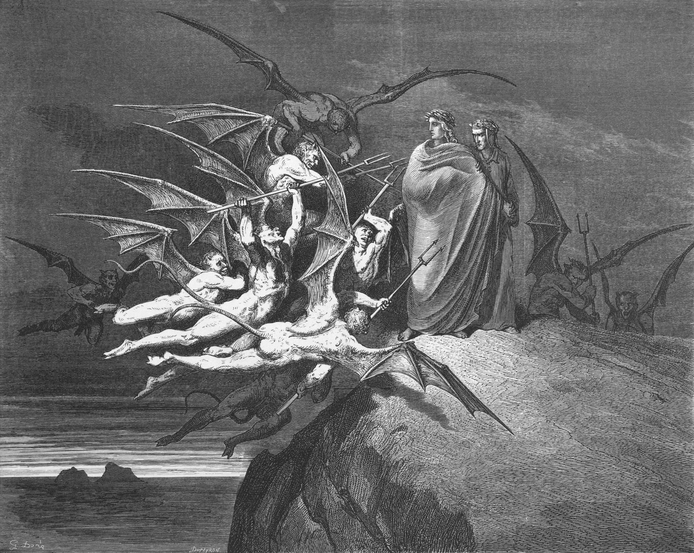

I poeti giungono nella quinta bolgia, dove i barattieri sono immersi nella pece bollente, sorvegliati dai diavoli Malebranche. I demoni agganciano con gli uncini chiunque tenti di emergere. Virgilio ferma il loro capo, Malacoda, che concede una scorta di dieci diavoli guidati da Barbariccia, ingannando però i poeti sulla reale stabilità del ponte roccioso crollato.
La narrazione prosegue nella quinta bolgia con la scorta dei diavoli. I poeti assistono alla cattura del barattiere Ciampolo di Navarra, il quale riesce astutamente a beffare i suoi aguzzini e a rituffarsi nella pece bollente. L'inganno scatena una violenta rissa aerea tra i diavoli Alichino e Calcabrina, che finiscono per cadere insieme dentro la materia viscosa.
